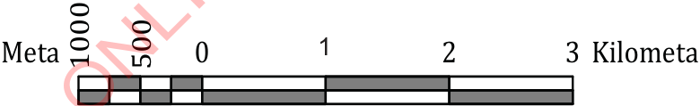

Skeli ya ramani
Skeli ya ramani ni uwiano wa umbali kwenye ramani na umbali halisi kwenye ardhi. Skeli ya ramani husaidia kuonesha namna vipimo vya ramani vinavyolingana na vipimo halisi. Skeli inaweza kuwasilishwa kwa njia ya maelezo, uwiano au sehemu, na mstari.
Njia ya maelezo
Skeli ya maelezo huonesha uwiano wa umbali kwenye ramani na umbali halisi kwenye ardhi kwa kutumia maneno. Kwa mfano, “Sentimeta moja kwenye ramani inawakilisha Kilometa moja kwenye ardhi”.
Njia ya uwiano au sehemu
Skeli ya uwiano au sehemu huonesha uwiano kati ya umbali kwenye ramani na umbali halisi kwenye ardhi kwa kutumia namba. Kwa mfano, 1:50000 au .
Njia ya mstari
Skeli ya mstari huonesha uwakilishi wa kijiografia wa umbali wa ardhi kwa kutumia mstari. Kielelezo namba 3 kinaonesha skeli ya mstari.

Vifaa vya kuchorea ramani
Kuna vifaa mbalimbali vinavyotumika katika uchoraji wa ramani. Vifaa hivyo ni pamoja na meza ya kuchorea, karatasi, kalamu ya risasi (penseli), bikari, kiguni, ufutio, kalamu ya wino, kichongeo, rangi za kuchorea na rula kama inavyoonekana katika Kielelezo namba 4.